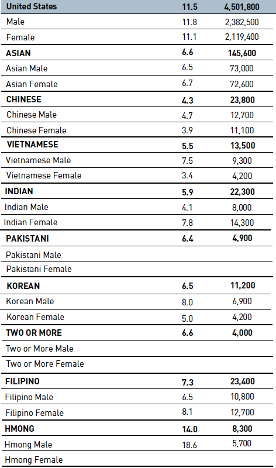
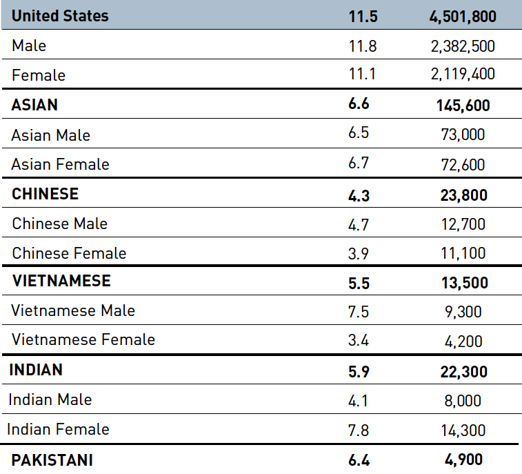
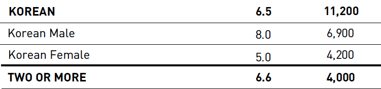
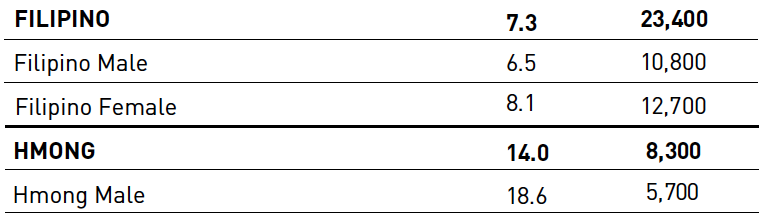

The first image we imported looks like this.
This makes it more difficult to wrangle this table. Wrangling the data via regular expressions may be very tedious. It’s unlikely that image processing software can handle the newline characters—or any other special characters—correctly.
If we remove these lines, some new errors emerge.
Data wrangling is not an exact science. The approaches we can take are extremely dependent on the data. We can exploit patterns in the data to render the output we desire.
We will now use a cropped version of image above without the special formatting.
We have several strings. Each cell of data is on a string separated by space.
We separate each string by space.
We split the dataframe in two: a labels section and a “data” section containing the information we are interested in.
In the first half, we remove all digits and punctuation to ensure that we are left with character labels.
In the second-half, remove commas and periods, converting the resulting string character class to numeric and selectively multiplying columns to reintroduce the decimal point correctly
df1a <- df1 %>%
purrr::map(~base::paste(.,collapse = "")) %>%
purrr::map(~base::gsub("[[:digit:]]+|[[:punct:]]+", "",.)) %>%
base::do.call(base::rbind,.) %>%
base::data.frame() %>%
dplyr::tibble()
df1b <- map(df1, tail, 8) %>%
map(~gsub("[,]+|[.]+", "",.)) %>%
do.call(rbind,.) %>%
data.frame() %>%
dplyr::mutate_if(base::is.character, base::as.numeric) %>%
dplyr::mutate_at(vars(-X7), ~ . * 0.1) %>%
tibble()
base::rm(df1)
We combine the two sections of data to create our dataframe, removing and then adding column names.
We remove columns with information we don’t need and use the commmon pattern in the column names to convert the data into long/narrow format.
We use the dplyr::case_when() and stringr::str_detect() function to detect patterns and create an separate column with gender and race information.
The two columns created contain TRUE/FALSE statements. These are then used to create a third column that will allow us to separate the data by its summary level.
df1 <- df1 %>%
mutate(Gender = dplyr::case_when(stringr::str_detect(Group, "Female") ~ TRUE,
stringr::str_detect(Group, "Male") ~ FALSE,
TRUE ~ NA),
Race = stringr::str_remove_all(Group,
pattern = paste(c("Female","Male","UnitedStates"),
collapse = "|"))) %>%
mutate(Race = dplyr::na_if(Race, ""))
df1 <- df1 %>%
mutate(Type = case_when(base::is.na(Gender) & base::is.na(Race) ~ "US Total",
base::is.na(Gender) & !base::is.na(Race) ~ "Race Total",
!base::is.na(Gender) & base::is.na(Race) ~ "Gender Total",
TRUE ~ "Subgroup Total"))
df1 <- df1 %>%
mutate(Gender = case_when(str_detect(Group, "Female") ~ "Female",
str_detect(Group, "Male") ~ "Male"))
The columns of character class currently contain upper and lower case characters. We want to ensure that we use a cases consistently to ensure that there are no errors driven by case-sensitive function downstream.
To do this, we use the base::to_upper() function. This function makes all characters uppercase.
Finally, we homogenize the labels assigned for certain groups, fill in missing (NA) values with a string, and remove columns we no longer need from the dataframe.
We can repeat this process for the other two tables listed on page 39.
Let’s look at the table without the special formatting.

As you can see, there are empty spaces. According to the PDF, these spaces are empty to denote that the estimates are unreliable.
This may cause problems. Whitespace must be handled differently. We may not want to process the entire image for this reason.
Instead, we can use separate images to ensure a simpler process like that above.
We read the three images.
# A tibble: 1 x 7
format width height colorspace matte filesize density
<chr> <int> <int> <chr> <lgl> <int> <chr>
1 PNG 757 687 sRGB TRUE 95660 72x72
# A tibble: 1 x 7
format width height colorspace matte filesize density
<chr> <int> <int> <chr> <lgl> <int> <chr>
1 PNG 751 177 sRGB TRUE 28913 72x72
# A tibble: 1 x 7
format width height colorspace matte filesize density
<chr> <int> <int> <chr> <lgl> <int> <chr>
1 PNG 760 216 sRGB TRUE 33402 72x72
The images look like this.



We save the text from the images into objects.
We process these objects separately. Note that we use a very similar process to that employed in the wrangling of the previous table.
We then combine the objects with the dplyr::bind_rows() function.
The process is now very similar to the previous table.
MICHAEL ONTIVEROS
I used base R to remove the first three rows of a dataframe in the following chunk. I am not aware of a tidyverse solution for this; I am sure one exists.
df2 <- bind_rows(df2a,
df2b,
df2c)
df2 <- df2 %>%
dplyr::select(value) %>%
pull(value) %>%
str_split(" ")
df2b <- map(df2, tail, 2) %>%
map(~gsub("[,]+|[.]+", "",.)) %>%
do.call(rbind,.) %>%
data.frame() %>%
mutate_if(is.character, as.numeric) %>%
mutate_at(vars(-X2), ~ . * 0.1) %>%
tibble()
df2a <- df2 %>%
map(~paste(.,collapse = "")) %>%
map(~gsub("[[:digit:]]+|[[:punct:]]+", "",.)) %>%
do.call(rbind,.) %>%
data.frame() %>%
tibble()
df2 <- bind_cols(df2a, df2b)
names(df2) <- c()
column_names <- c("Group",
"Rate",
"N_2017")
colnames(df2) <- column_names
df2 <- df2 %>%
dplyr::select(-N_2017)
df2 <- df2 %>%
dplyr::mutate(Year = 2017)
df2 <- df2 %>%
mutate(Gender = case_when(str_detect(Group, "Female") ~ TRUE,
str_detect(Group, "Male") ~ FALSE,
TRUE ~ NA),
Subgroup = str_remove_all(Group,
pattern = paste(c("Female",
"Male",
"ASIAN",
"Asian"),
collapse = "|"))) %>%
mutate(Subgroup = na_if(Subgroup, ""))
glimpse(df2)
Rows: 25
Columns: 5
$ Group <chr> "UnitedStates", "Male", "Female", "ASIAN", "AsianMale", "Asi…
$ Rate <dbl> 11.5, 11.8, 11.1, 6.6, 6.5, 6.7, 4.3, 4.7, 3.9, 5.5, 7.5, 3.…
$ Year <dbl> 2017, 2017, 2017, 2017, 2017, 2017, 2017, 2017, 2017, 2017, …
$ Gender <lgl> NA, FALSE, TRUE, NA, FALSE, TRUE, NA, FALSE, TRUE, NA, FALSE…
$ Subgroup <chr> "UnitedStates", NA, NA, NA, NA, NA, "CHINESE", "Chinese", "C…
Rows: 22
Columns: 6
$ Group <chr> "ASIAN", "AsianMale", "AsianFemale", "CHINESE", "ChineseMale…
$ Rate <dbl> 6.6, 6.5, 6.7, 4.3, 4.7, 3.9, 5.5, 7.5, 3.4, 5.9, 4.1, 7.8, …
$ Year <dbl> 2017, 2017, 2017, 2017, 2017, 2017, 2017, 2017, 2017, 2017, …
$ Gender <lgl> NA, FALSE, TRUE, NA, FALSE, TRUE, NA, FALSE, TRUE, NA, FALSE…
$ Subgroup <chr> NA, NA, NA, "CHINESE", "Chinese", "Chinese", "VIETNAMESE", "…
$ Type <chr> "Asian Total", "Gender Total", "Gender Total", "Subgroup Tot…
Note that we took a process that had successfully worked for us and modified it slightly for separate, similarly-sourced data.
This is a common approach in data science. Often, the duration of the wrangling process can limit the depth of an analysis for practical reasons. Using tried methods can help reduce the time needed to wrangle data and allow time for other parts of an analysis.
Let’s add the 2018 data for this group.
We import the image.
As you can see, we have repeated newlines (\n). We can remove these with some simplex regex.
We proceed, making slight modifications to the process as needed.
The bold font appears to have caused a typos.
# A tibble: 17 x 1
value
<chr>
1 CHINESE 41 23300
2 Men 45 12500
3 Women 37 10800
4 INDIAN B44 21800
5 Men 47 10400
6 Women 61 11300
7 KOREAN 55 9000
8 Men 56 4700
9 Women 54 4300
10 VIETNAMESE 63 15300
11 Men 76 9000
12 Women 50 6400
13 FILIPINO 68 20800
14 Men 63 10000
15 Women74 10800
16 HMONG102 5300
17 CAMBODIAN 138 4200
We fix the typos.
# A tibble: 17 x 1
value
<chr>
1 CHINESE 41 23300
2 Men 45 12500
3 Women 37 10800
4 INDIAN 54 21800
5 Men 47 10400
6 Women 61 11300
7 KOREAN 55 9000
8 Men 56 4700
9 Women 54 4300
10 VIETNAMESE 63 15300
11 Men 76 9000
12 Women 50 6400
13 FILIPINO 68 20800
14 Men 63 10000
15 Women 74 10800
16 HMONG 102 5300
17 CAMBODIAN 138 4200
We then continue as we would normally.
df2_2018 <- df2_2018 %>%
dplyr::select(value) %>%
pull(value) %>%
str_split(" ")
df2_2018 <- lapply(df2_2018,
function(x) x[nchar(x) >= 1])
df2a_2018 <- df2_2018 %>%
map(~paste(.,collapse = "")) %>%
map(~gsub("[[:digit:]]+|[[:punct:]]+", "",.)) %>%
do.call(rbind,.) %>%
data.frame() %>%
tibble()
df2b_2018 <- map(df2_2018, tail, 2) %>%
do.call(rbind,.) %>%
data.frame() %>%
mutate_if(is.character, as.numeric) %>%
mutate_at(vars(-X2), ~ . * 0.1) %>%
tibble()
rm(df2_2018)
df2_2018 <- bind_cols(df2a_2018,
df2b_2018)
names(df2_2018) <- c()
column_names <- c("Group",
"Rate",
"N_2017")
colnames(df2_2018) <- column_names
df2_2018 <- df2_2018 %>%
dplyr::select(-N_2017)
df2_2018 <- df2_2018 %>%
dplyr::mutate(Year = 2018)
df2_2018 <- df2_2018 %>%
mutate(Gender = case_when(str_detect(Group, "Women") ~ TRUE,
str_detect(Group, "Men") ~ FALSE,
TRUE ~ NA))
labels <- unlist(df2_2018[c(seq(1,15, by=3),16,17),1], use.names = FALSE)
dim(df2_2018)[1]
[1] 17
Rows: 17
Columns: 6
$ Group <chr> "CHINESE", "Men", "Women", "INDIAN", "Men", "Women", "KOREAN…
$ Rate <dbl> 4.1, 4.5, 3.7, 5.4, 4.7, 6.1, 5.5, 5.6, 5.4, 6.3, 7.6, 5.0, …
$ Year <dbl> 2018, 2018, 2018, 2018, 2018, 2018, 2018, 2018, 2018, 2018, …
$ Gender <lgl> NA, FALSE, TRUE, NA, FALSE, TRUE, NA, FALSE, TRUE, NA, FALSE…
$ Subgroup <chr> "CHINESE", "CHINESE", "CHINESE", "INDIAN", "INDIAN", "INDIAN…
$ Type <chr> "Subgroup Total", "Subgroup Total", "Subgroup Total", "Subgr…
The dataframe we produced does not contain totals.
# A tibble: 17 x 5
Rate Year Gender Subgroup Type
<dbl> <dbl> <chr> <chr> <chr>
1 4.1 2018 ALL CHINESE SUBGROUP TOTAL
2 4.5 2018 MALE CHINESE SUBGROUP TOTAL
3 3.7 2018 FEMALE CHINESE SUBGROUP TOTAL
4 5.4 2018 ALL INDIAN SUBGROUP TOTAL
5 4.7 2018 MALE INDIAN SUBGROUP TOTAL
6 6.1 2018 FEMALE INDIAN SUBGROUP TOTAL
7 5.5 2018 ALL KOREAN SUBGROUP TOTAL
8 5.6 2018 MALE KOREAN SUBGROUP TOTAL
9 5.4 2018 FEMALE KOREAN SUBGROUP TOTAL
10 6.3 2018 ALL VIETNAMESE SUBGROUP TOTAL
11 7.6 2018 MALE VIETNAMESE SUBGROUP TOTAL
12 5 2018 FEMALE VIETNAMESE SUBGROUP TOTAL
13 6.8 2018 ALL FILIPINO SUBGROUP TOTAL
14 6.3 2018 MALE FILIPINO SUBGROUP TOTAL
15 7.4 2018 FEMALE FILIPINO SUBGROUP TOTAL
16 10.2 2018 ALL HMONG SUBGROUP TOTAL
17 13.8 2018 ALL CAMBODIAN SUBGROUP TOTAL
We can find these totals in the PDF directly and create rows as needed
We load the PDF.
We add the rows.
df2_2018 <- df2_2018 %>%
add_row(Rate = 6.2,
Year = 2018,
Gender = "ALL",
Subgroup = "ALL",
Type = "ASIAN TOTAL") %>%
add_row(Rate = 6.1,
Year = 2018,
Gender = "FEMALE",
Subgroup = "ALL",
Type = "GENDER TOTAL") %>%
add_row(Rate = 6.4,
Year = 2018,
Gender = "MALE",
Subgroup = "ALL",
Type = "GENDER TOTAL")
We repeat this process again for Latino/a subgroups.
The table, without the special formatting, looks like this.
There are no whitespaces in this table.
We proceed using what we’ve learned while wrangling the first two tables.
# A tibble: 17 x 1
value
<chr>
1 LATINO 13.2 1,157,300
2 Latino Male 12.4 562,600
3 Latina Female 13.9 594,700
4 SOUTH AMERICAN 8.4 37,600
5 South American Male 9.1 20,400
6 South American Female 17 17,200
7 CENTRAL AMERICAN 12.0 93,100
8 Central American Male 9.3 37,900
9 Central American Female 15.0 55,200
10 MEXICAN 13.3 762,400
11 Mexican Male 12.2 358,200
12 Mexican Female 14.4 404,200
13 OTHER LATINO 13.6 44,800
14 Other Latino Male 15.3 27,600
15 Other Latina Female 11.5 17,300
16 PR, DR, Cuban Female 15.7 114,500
17 PR, DR, Cuban Female 14.4 96,600
We are often presented with scenarios where stand-alone approaches are difficult or time-consuming.
It is always best to document the steps take to respond to these scenarios. Wrangling this third table is a prime example of this.
We are missing a row. Let’s manually add the row.
We can now proceed as we did with the previous tables.
df3 <- df3 %>%
dplyr::select(value) %>%
pull(value) %>%
str_split(" ")
df3b <- map(df3, tail, 2) %>%
map(~gsub("[,]+|[.]+", "",.)) %>%
do.call(rbind,.) %>%
data.frame() %>%
mutate_if(is.character, as.numeric) %>%
mutate_at(vars(-X2), ~ . * 0.1) %>%
tibble()
df3a <- df3 %>%
map(~paste(.,collapse = "")) %>%
map(~gsub("[[:digit:]]+|[[:punct:]]+", "",.)) %>%
do.call(rbind,.) %>%
data.frame() %>%
tibble()
rm(df3)
df3 <- bind_cols(df3a, df3b)
names(df3) <- c()
column_names <- c("Group",
"Rate",
"N_2017")
colnames(df3) <- column_names
If we look at the last few rows, we see that there is a typo. There are two female groups.
# A tibble: 6 x 3
Group Rate N_2017
<chr> <dbl> <dbl>
1 OTHERLATINO 13.6 44800
2 OtherLatinoMale 15.3 27600
3 OtherLatinaFemale 11.5 17300
4 PRDRCubanFemale 15.7 114500
5 PRDRCubanFemale 14.4 96600
6 PRDRCuban 15.1 211200
Sometimes when wrangling text data, we will come across a typo. We need to determine how to respond to the typo and make note of it. It’s often best to consult a secondary source to confirm that changes made are accurate.
For the purposes of this case study, we will assume that the first of the two rows represents male disconnection rates in the Latino/a subgroup; this would be consistent with the ordering of genders in the previous subgroups.
Let’s make the correction to the typo.
It looks like we’ve succesfully corrected the typo.
# A tibble: 6 x 3
Group Rate N_2017
<chr> <dbl> <dbl>
1 OTHERLATINO 13.6 44800
2 OtherLatinoMale 15.3 27600
3 OtherLatinaFemale 11.5 17300
4 PRDRCubanMale 15.7 114500
5 PRDRCubanFemale 14.4 96600
6 PRDRCuban 15.1 211200
We can continue with the process we’ve developed now that we have made the correction.
df3 <- df3 %>%
dplyr::select(-N_2017)
df3 <- df3 %>%
dplyr::mutate(Year = 2017)
df3 <- df3 %>%
mutate(Gender = case_when(str_detect(Group, "Female") ~ TRUE,
str_detect(Group, "Male") ~ FALSE,
TRUE ~ NA),
Subgroup = str_remove_all(Group,
pattern = paste(c("Female",
"Male",
"LATINO",
"Latino",
"Latina"),
collapse = "|"))) %>%
mutate(Subgroup = na_if(Subgroup, ""))
glimpse(df3)
Rows: 18
Columns: 5
$ Group <chr> "LATINO", "LatinoMale", "LatinaFemale", "SOUTHAMERICAN", "So…
$ Rate <dbl> 13.2, 12.4, 13.9, 8.4, 9.1, 1.7, 12.0, 9.3, 15.0, 13.3, 12.2…
$ Year <dbl> 2017, 2017, 2017, 2017, 2017, 2017, 2017, 2017, 2017, 2017, …
$ Gender <lgl> NA, FALSE, TRUE, NA, FALSE, TRUE, NA, FALSE, TRUE, NA, FALSE…
$ Subgroup <chr> NA, NA, NA, "SOUTHAMERICAN", "SouthAmerican", "SouthAmerican…
Rows: 18
Columns: 6
$ Group <chr> "LATINO", "LatinoMale", "LatinaFemale", "SOUTHAMERICAN", "So…
$ Rate <dbl> 13.2, 12.4, 13.9, 8.4, 9.1, 1.7, 12.0, 9.3, 15.0, 13.3, 12.2…
$ Year <dbl> 2017, 2017, 2017, 2017, 2017, 2017, 2017, 2017, 2017, 2017, …
$ Gender <lgl> NA, FALSE, TRUE, NA, FALSE, TRUE, NA, FALSE, TRUE, NA, FALSE…
$ Subgroup <chr> NA, NA, NA, "SOUTHAMERICAN", "SouthAmerican", "SouthAmerican…
$ Type <chr> "Latino/a Total", "Gender Total", "Gender Total", "Subgroup …
df3 <- df3 %>%
mutate(Gender = case_when(str_detect(Group, "Female") ~ "Female",
str_detect(Group, "Male") ~ "Male"))
df3 <- df3 %>%
mutate_if(is.character, tolower) %>%
mutate_if(is.character, toupper)
df3 <- df3 %>%
mutate(Gender = replace_na(Gender, "ALL"),
Subgroup = replace_na(Subgroup, "ALL")) %>%
dplyr::select(-Group) %>%
mutate(Subgroup)
df3 <- df3 %>%
mutate(Subgroup = case_when(Subgroup == "SOUTHAMERICAN" ~ "SOUTH AMERICAN",
Subgroup == "CENTRALAMERICAN" ~ "CENTRAL AMERICAN",
Subgroup == "PRDRCUBAN" ~ "PR/DR/CUBAN",
TRUE ~ Subgroup))
Let’s add the 2018 data to this dataframe.
We import the image.
As you can see, we have repeated newlines (\n). We can remove these with some simplex regex.
We proceed, making slight modifications to the process as needed.
df3_2018 <- df3_2018 %>%
strsplit("\n") %>%
unlist() %>%
as_tibble()
df3_2018 <- df3_2018 %>%
dplyr::select(value) %>%
pull(value) %>%
str_split(" ")
df3_2018 <- lapply(df3_2018,
function(x) x[nchar(x) >= 1])
df3a_2018 <- df3_2018 %>%
map(~paste(.,collapse = "")) %>%
map(~gsub("[[:digit:]]+|[[:punct:]]+", "",.)) %>%
do.call(rbind,.) %>%
data.frame() %>%
tibble()
df3b_2018 <- map(df3_2018, tail, 2) %>%
do.call(rbind,.) %>%
data.frame() %>%
mutate_if(is.character, as.numeric) %>%
mutate_at(vars(-X2), ~ . * 0.1) %>%
tibble()
rm(df3_2018)
df3_2018 <- bind_cols(df3a_2018,
df3b_2018)
names(df3_2018) <- c()
column_names <- c("Group",
"Rate",
"N_2017")
colnames(df3_2018) <- column_names
df3_2018 <- df3_2018 %>%
dplyr::select(-N_2017)
df3_2018 <- df3_2018 %>%
dplyr::mutate(Year = 2018)
df3_2018 <- df3_2018 %>%
mutate(Gender = case_when(str_detect(Group, "Women") ~ TRUE,
str_detect(Group, "Men") ~ FALSE,
TRUE ~ NA))
labels <- unlist(df3_2018[seq(1,12, by =3),1], use.names = FALSE)
dim(df3_2018)[1]
[1] 12
Rows: 12
Columns: 6
$ Group <chr> "SOUTHAMERICAN", "Men", "Women", "MEXICAN", "Men", "Women", …
$ Rate <dbl> 8.0, 7.5, 8.6, 12.9, 12.0, 13.8, 13.7, 14.9, 12.4, 13.7, 11.…
$ Year <dbl> 2018, 2018, 2018, 2018, 2018, 2018, 2018, 2018, 2018, 2018, …
$ Gender <lgl> NA, FALSE, TRUE, NA, FALSE, TRUE, NA, FALSE, TRUE, NA, FALSE…
$ Subgroup <chr> "SOUTHAMERICAN", "SOUTHAMERICAN", "SOUTHAMERICAN", "MEXICAN"…
$ Type <chr> "Subgroup Total", "Subgroup Total", "Subgroup Total", "Subgr…
We load the PDF.
We add the rows.
df3_2018 <- df3_2018 %>%
add_row(Rate = 12.8,
Year = 2018,
Gender = "ALL",
Subgroup = "ALL",
Type = "LATINO/A TOTAL") %>%
add_row(Rate = 13.3,
Year = 2018,
Gender = "FEMALE",
Subgroup = "ALL",
Type = "GENDER TOTAL") %>%
add_row(Rate = 12.3,
Year = 2018,
Gender = "MALE",
Subgroup = "ALL",
Type = "GENDER TOTAL")
We add the 2018 data to the dataframe